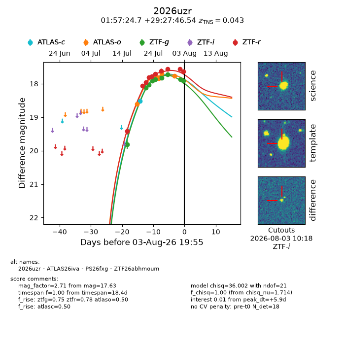
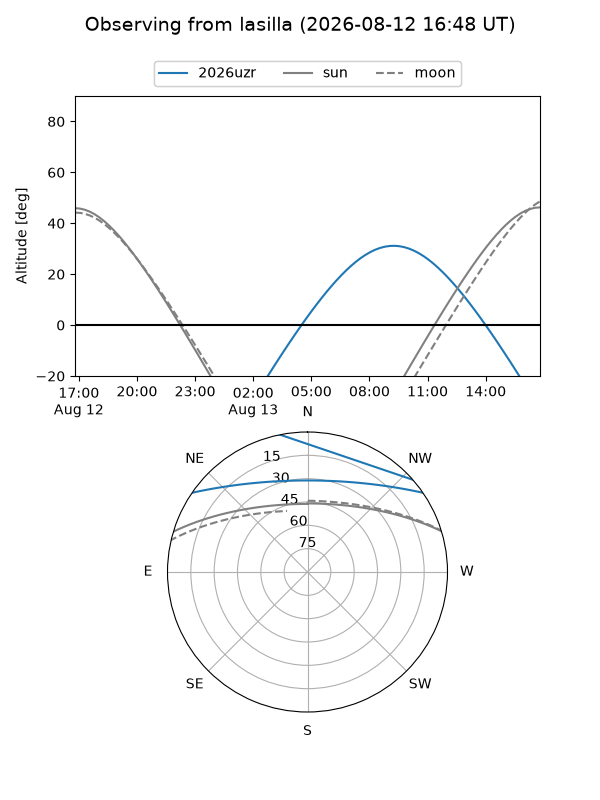
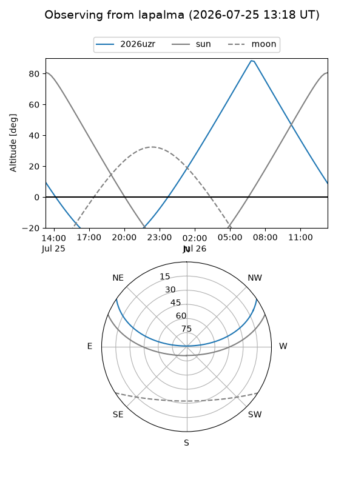
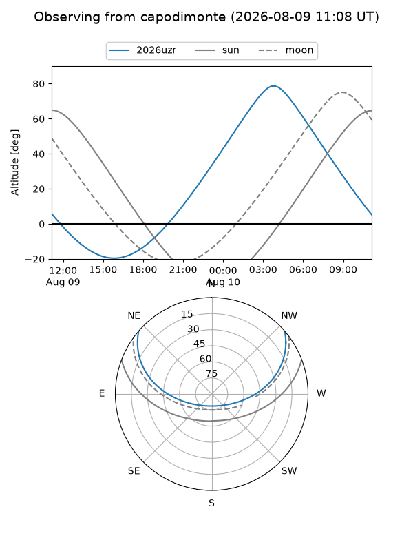
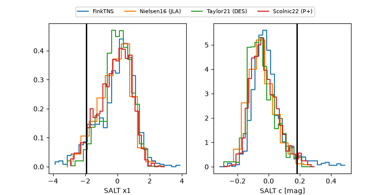

2026uzr
Target 2026uzr at 2026-08-03 19:57
Aliases and brokers:
FINK-ZTF: ztf.fink-portal.org/ZTF26abhmoum
Lasair-ZTF: lasair-ztf.lsst.ac.uk/objects/ZTF26abhmoum
ALeRCE-ZTF: alerce.online/object/ZTF26abhmoum
YSE-PZ: ziggy.ucolick.org/yse/transient_detail/2026uzr
TNS name: wis-tns.org/object/2026uzr
Direct TNS query: direct search
alt names
ZTF26abhmoum (ztf,fink_ztf)
2026uzr (tns,yse)
ATLAS26iva (atlas)
PS26fxg (panstarrs)
Coordinates:
equatorial (ra, dec) = 29.3527,+29.46293
equatorial (HMS+DMS) = 01:57:24.65,+29:27:46.54
galactic (l, b) = (139.7376,-31.24677)
Flags:
TNS type: SN Ia
TNS redshift: 0.0430
peak dt: +5.9
Photometry:
last atlasc=18.51, atlaso=17.77, ztfg=17.92, ztfr=17.63
1 atlasc, 5 atlaso, 9 ztfg, 10 ztfr detections
Lightcurve

Visibility



Additional plots
